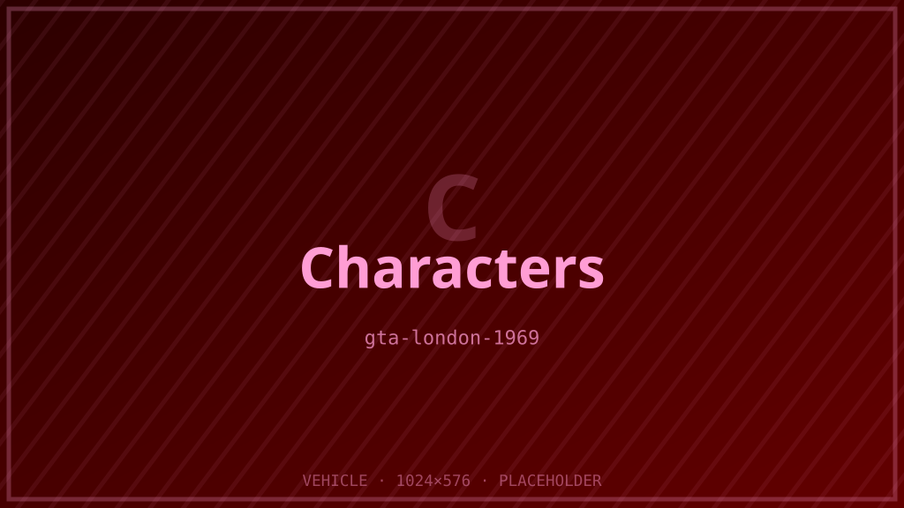
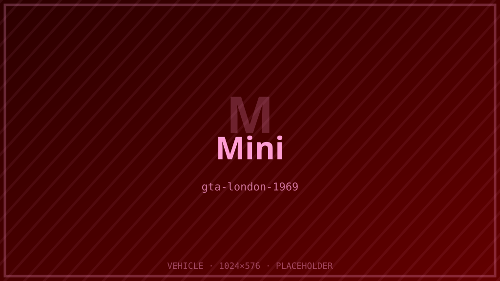
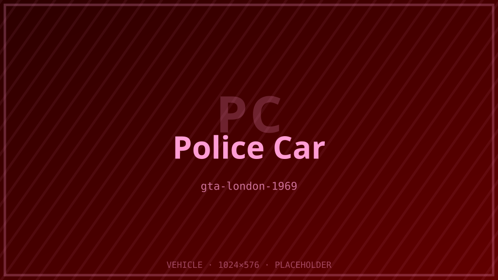

London 1969 · 42 records · coverage: complete
Vehicles — Grand Theft Auto: London 1969
Cars, bikes, boats, aircraft and special vehicles with class and capacity.
Download vehicles.json Whole game bundle 1 unverified record
| Image | Vehicle | Category | Class | Top speed (km/h) | Seats |
|---|---|---|---|---|---|
 | Ambulance | Government and Emergency | Medical | — | 2 |
 | Beagle 3 | 4x4s, Lorries, and Vans | — | — | — |
 | Bike | Motorcycles | — | — | — |
 | Bug | Standard Cars | — | — | — |
 | Camper | 4x4s, Lorries, and Vans | — | — | — |
 | Characters | Navigation | — | — | — |
 | Coach | Public Service | — | — | — |
 | Copper | Government and Emergency | — | — | — |
| Crapi | Standard Cars | — | — | — | |
| Double Decker | Public Service | — | — | — | |
 | Double-Decker Bus | Industrial | Bus | — | 4 |
 | Fat | Standard Cars | — | — | — |
 | Ferocious GTO | Sports Cars | — | — | — |
 | Fire Truck | Government and Emergency | — | — | — |
 | Flatbed | 4x4s, Lorries, and Vans | — | — | — |
 | Garden Shed | Standard Cars | — | — | — |
| Harold | Standard Cars | — | — | — | |
 | ICBM | 4x4s, Lorries, and Vans | — | — | — |
 | Jaguar | Car | Sports | — | 2 |
| James Bomb | Sports Cars | — | — | — | |
| Jug MkII | Standard Cars | — | — | — | |
 | Jug Swinger | Sports Cars | — | — | — |
| Jugular E | Sports Cars | — | — | — | |
| Locust | Sports Cars | — | — | — | |
| London Cab | Public Service | Taxi | — | 4 | |
 | Mangler | Standard Cars | — | — | — |
| MC Hamper | Sports Cars | — | — | — | |
 | Mini | Car | Compact | — | 4 |
 | Mod Scooter | Motorcycles | — | — | — |
 | Myni | Standard Cars | — | — | — |
 | Police Car | Emergency | Police | — | 4 |
 | Ranger | 4x4s, Lorries, and Vans | — | — | — |
| Raver | Standard Cars | — | — | — | |
| Reno 17TL | Sports Cars | — | — | — | |
| Royal Pain | Government and Emergency | — | — | — | |
 | Royal Stretch | Standard Cars | — | — | — |
| S-Cart | Standard Cars | — | — | — | |
 | Squealey | Sports Cars | — | — | — |
 | Sweets Van | 4x4s, Lorries, and Vans | — | — | — |
| Tanker | 4x4s, Lorries, and Vans | — | — | — | |
 | Tour Bus | Public Service | — | — | — |
| Wheelchair | Miscellaneous | — | — | — |
Field definitions
| Field | Type | Required | Notes |
|---|---|---|---|
name | string | yes | |
category | string | yes | |
class | string | no | |
top_speed_kph | integer | null | no | |
top_speed_mph | integer | null | no | |
seats | integer | null | no | |
price | integer | null | no | |
image | string | null | no | |
verified | boolean | yes | |
source | string | no |